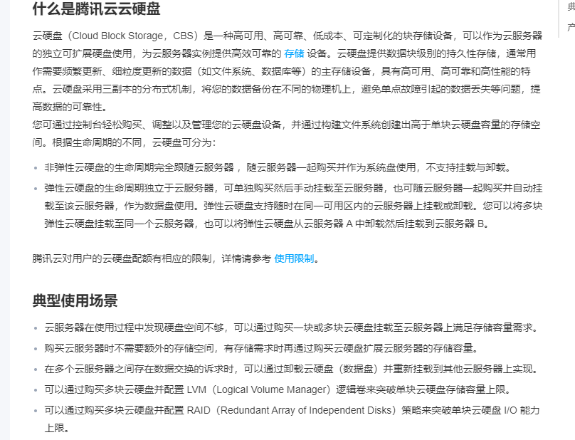

5.3 NFS卷
NFS 卷，可以把它想象成云硬盘，随时可以挂载到服务器的任意目录，而且多个服务器可以同时使用这个卷。
在前面，我们学习了 emptyDir、hostPath 等卷，这些卷都有各自的应用场景，创建也很方便。但是这些卷都不能为多节点中的 Pod 提供存储空间，当 Pod 的副本在不同节点中运行时，无法通过这些卷为所有的 Pod 提供一致的文件内容；后续如果程序修改了卷中的文件，也无法同步操作到所有 Pod 中。
NFS 是一种网络文件系统，英文 Network File System(NFS)，能使使用者访问网络上别处的文件就像在使用自己的计算机一样，NFS 可以独立于集群中的节点，其存储空间可以在集群之外，然后通过网络为多个节点共享文件。不同的节点可以通过远程存取、操作文件，同时文件的状态为所有节点共享，保证每个节点上访问到的文件内容、状态都是一致的、实时的。
NFS 是基于 UDP/IP 协议的应用，其实现是采用远程过程调用 RPC 机制，NFS 提供了一组与机器、操作系统以及低层传送协议无关的存取远程文件的操作。
以某云的云硬盘为例，了解一下它。

搭建 NFS 服务
nfs 服务
我们首先在一台服务器上，部署 NFS 服务，由于这个服务器对所有节点提供了文件系统，所以这台服务器的硬盘需要能够自动备份、宕机保护等，保证数据安全。
笔者建议是 master 节点创建 nfs 服务，worker 节点使用 nfs 服务。
在 Ubuntu 中安装 nfs 库，启动 nfs 服务。
sudo apt-get update && sudo apt-get install -y nfs-kernel-server
在服务器上创建要共享的目录。
mkdir /nfs-share
chmod 777 /nfs-share
# 随便填充一些文件
echo env > /nfs-share/env.txt
检查 nfs 服务是否已经正常安装：
rpcinfo -p localhost
导出配置：
echo "/nfs-share *(rw,no_root_squash,sync)" >> /etc/exports
使配置生效：
exportfs -r
检查是否已经生效：
exportfs
启动 rpcbind、nfs 服务：
systemctl restart rpcbind
systemctl enable rpcbind
systemctl restart nfs
systemctl enable nfs
接下来可以在本服务器上测试：
showmount -e $(hostname -i)
# 或者 showmount -e 127.0.0.1
Export list for 10.170.0.2:
/nfs-share *
nfs 客户端
在另一台服务器上安装 nfs 客户端。
apt install nfs-common
挂载 nfs 服务器的目录到本地中：
mount {部署了nfs服务器的ip}:/nfs-share /mnt
查看挂载的目录：
ls -lah /mnt
total 12K
drwxrwxrwx 2 root root 4.0K May 1 02:36 .
drwxr-xr-x 24 root root 4.0K May 1 02:35 ..
-rw-r--r-- 1 root root 4 May 1 02:36 env.txt
说明我们的配置没有问题，现在是挂载到主机的目录。接下来我们将 NFS 卷挂载到 Pod 中。
挂载到 Pod
模板如下：
apiVersion: v1
kind: Pod
metadata:
name: nginx
spec:
containers:
- name: nginx
image: nginx:latest
volumeMounts:
- name: mynfs
mountPath: /mnt/mynfs
volumes:
- name: mynfs
nfs:
server: 10.170.0.2
path: /nfs-share
kubectl apply -f nginx.yaml
查看容器中的 /mnt/mynfs 目录：
kubectl exec nginx -- ls /mnt/mynfs